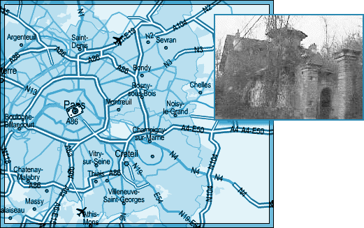
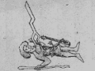

L'ICPA est une association privée créée par des amis et des collègues du journaliste Jack Lorski au lendemain de l'annonce de son meurtre en Écosse. Son seul but est d'aider les services de police et de justice internationaux à mettre fin le plus tôt possible aux agissements criminels du Phoenix.
SKL NETWORK est l'agence qui employait Jack Lorski. Elle a reçu et rendu public les deux CD-Roms envoyés par le Phoenix.
LIBERATION.FR a publié plusieurs articles sur l'affaire du Phoenix. Utilisez son moteur de recherches pour accéder à ses archives.
VICTIME N°6 : ANTONIO FOSCARINI
- IDENTITÉ
Antonio Foscarini était journaliste et, mandaté par Manus Domini dont il était un membre laïc actif, il enquêtait sur les cinq premiers meurtres du Phoenix.
En 1999, il a écrit le livre « Être journaliste à Rome : mission à haut risque ».
- PHOTO*
* Extraite d'une vidéo de Jack Lorski.
- DATE ET LIEU DU CRIME
Début octobre 2002, le corps d'Antonio Foscarini est retrouvé par Jack Lorski et Karen Gijman dans les dépendances d'une ancienne abbaye désaffectée, à l'est de Paris. Ils ont été guidés vers cet endroit grâce à un e-mail du Phoenix. - AUTOPSIE
Antonio Foscarini a été brûlé vif. D'après l'autopsie, il semble avoir subi des tortures physiques avant son immolation. - ANALYSE
Antonio Foscarini est la sixième victime connue du Phoenix. Le tueur l'a choisi parce qu'il était membre de Manus Domini, condition sine qua non de sa vengeance contre cette société secrète, mais il l'a surtout choisi car le journaliste italien enquêtait sur lui… et pouvait contrecarrer ses projets.
Cette pression exercée par Foscarini a obligé le Phoenix a changé ses plans car, pour la première fois, il n'a pas choisi sa cible par rapport à son lieu d'habitation. Contrairement aux précédentes mises en scène, le tueur n'a pas non plus déposé le cadavre près d'un lieu directement lié à Giordano Bruno. Cependant, en tuant sa sixième victime à Paris, il a quand même respecté son rituel lié au parcours européen de son maître à penser. En effet, après son retour à Paris en 1585, Giordano Bruno défend 125 thèses anti-aristotéliciennes au Collège des lecteurs royaux (l'actuel Collège de France), provoquant le désappointement de son public parmi lequel l'avocat Raoul Callier. Bruno perd aussi le soutien de la communauté italienne dans l'affaire Mordente : Géophysicien inventeur du compas différentiel, celui-ci a reproché à Bruno d'avoir plagié son instrument. Même le Roi de France, Henri III, qui l'a protégé jusqu'ici, l'abandonne à son tour. Dépourvu de tout soutien, le philosophe italien est obligé de fuir vers l'Allemagne.
Toujours en référence à son maître, le Phoenix a signé son crime en associant Antonio Foscarini à Esculapius (Esculape), le septième principe élémentaire de la magie brunienne (De imaginum idearum compositione, 1591) :Un homme barbu terrassé par la foudre tombée du ciel. Il tient un bâton dans sa main, et un garçon lui fait offrande de fleurs ; à côté de lui, une cithare. - COMMENTAIRES DU PHOENIX
• « Dans une grange abandonnée, près d'une ancienne abbaye, personne ne l'a entendu crier. Le Feu l'a purifié. »
• « Ce type avait pris un pseudonyme pour écrire ses articles : Antonio Foscarini. Mais en fait, il était mandaté par Manus Domini, société secrète à laquelle il appartenait, pour enquêter sur moi. Cette double trahison l'a perdu…
Tu connais le sort que je lui ai réservé… Les flammes l'ont purifié. »
- LIEN
• Petite annonce d'un internaute qui vend un livre de Foscarini sur livrissime.com (12/08/2003)